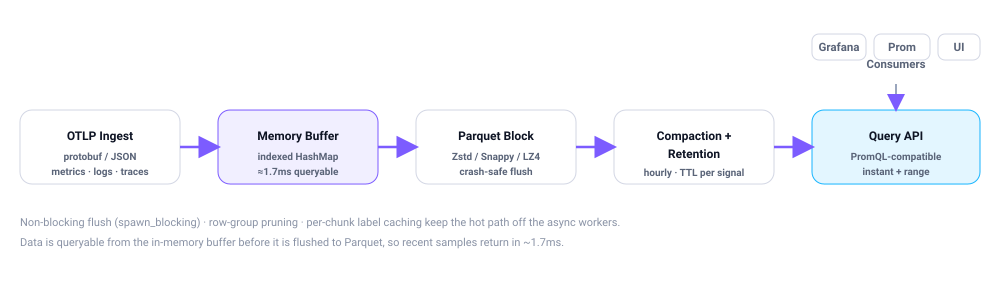

Architecture
A single Axum binary does ingestion, querying, pipelines, and alerting on top of parqtel-core. MCP servers run as independent sidecars so the core stays small.

Data flow
OTLP signals arrive over protobuf or JSON. The rotator appends them to an indexed in-memory buffer and periodically flushes a Parquet block on a blocking thread (so ingest never stalls on disk I/O). Compaction merges small blocks; retention evicts expired ones. Queries read the buffer first, then scan matching blocks with row-group pruning.

Workspace crates
Parqtel is a Cargo workspace of 14 crates.
| Crate | Responsibility |
|---|---|
parqtel-core | Data models (metrics, logs, traces), storage engine, block index, compaction, retention, configuration. |
parqtel-ingest | OTLP protobuf/JSON decoding, block rotation, crash-safe Parquet writing. |
parqtel-query | PromQL-compatible execution, label matching, aggregation functions. |
parqtel-alert | Rule registry, threshold evaluation, state machine (Inactive→Pending→Firing→Resolved), alert store. |
parqtel-pipeline | Recording rules, stream-processing pipelines, PromQL/DQL expression evaluation. |
parqtel-server | Axum HTTP server, route handlers, middleware, telemetry, built-in UI (binary: parqtel). |
parqtel-mcp-core | Shared MCP framework: JSON-RPC, rate limiting, tool registry. |
parqtel-mcp-{slack,pagerduty,jira,notion,discord,gdocs,parqtel} | Standalone tool servers for external integrations. |
Storage model
Parqtel stores data in self-contained Parquet block files. Each block carries row-group min/max statistics so time-range scans skip irrelevant data.

| Signal | Block window | Max rows | Default retention |
|---|---|---|---|
| Metrics | 2 hours | 1,000,000 | 7 days |
| Logs | 30 minutes | 200,000 | 3 days |
- Compaction merges small blocks automatically (hourly).
- Retention is configurable per signal.
- In-memory buffer — data is immediately queryable via an indexed
HashMap<metric_name, Vec<DataPoint>>before the Parquet flush, so recent samples return in ~1.7ms. - Durability — blocks are immutable once written, so they can be snapshotted or rsync'd while the server runs.
Configuration layering
Configuration is resolved by Figment in this priority order (highest wins):
- Built-in defaults
- TOML config file (
config/default.toml, override withPARQTEL_CONFIG) - Environment variables (
PARQTEL__prefix,__as nested separator) - CLI flags
Hot-path optimizations
These keep the async workers free so ingest and query stay fast under load:
- Non-blocking flushes — Parquet encode, compression, and disk I/O run on
spawn_blocking; the rotator swaps its writer so ingest continues during flushes. - Capacity pre-check — rotators flush before a batch would exceed block capacity;
pushreports whether it flushed so callers drain the buffer correctly. - Scanner on blocking pool — block scans use bounded
spawn_blockingtasks (semaphore acquired before spawn). - Row-group pruning — row groups skipped via timestamp min/max; blocks written with ~25K-row groups.
- Per-chunk label caching — parsed LabelSets cached by raw JSON; metric scans filter timestamp/name before any allocation.
See the performance benchmarks for before/after micro-benchmarks (ingest, flush, scan, query).